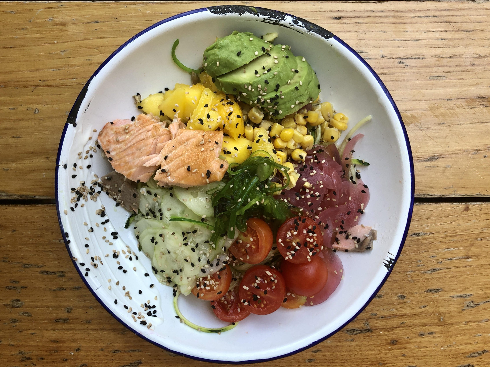

<!DOCTYPE html>
<html>
<head>
	<link rel="stylesheet" type="text/css" href="../css/style-6.css" />
	<title>20211029</title>
</head>
</html>
<body>
<div id=content>
	<div id="blog-container">
		<div class= "info">
			<div id="header">
			<h1>The importance of adrenaline and exercise</h1>
			</div>

			<div id=text-blocks>

				<div class="block" id="block-1">

					<p>The most alive I’ve felt in recent weeks is falling off a rock climbing wall. Before that, it was surfing. Before that, it was being robbed at a Peet’s Coffee my sophomore year of college. All 3 of these activities have some element of adrenaline, risk, and danger involved. I’m told that falling in love provides similar feelings, but that’s not something you can control: people fall in and out of love all the time against their better judgement. Instead of forcing yourself into love, spend some time with other ways that make you feel alive. It doesn’t have to be something life-threatening like bullfighting or free-climbing. I’ve found similar highs in competitive sports leagues, for example.</p><br> 

				</div>

				<div class="block" id="block-2">

					<p>Exercise is also important for happiness in that it decreases the probability that we feel unhappy. Personally, I notice a huge difference in the person I was before I started consistently working out and the person I became after. Exercise makes the activities of daily living—including just plain existing—a whole lot easier. It will make the 23 non-gym hours of your life less challenging because physiologically and psychologically you are training yourself to deal with progressively harder challenges. Many of the physiological pathways of what we see as separate mental and physical fatigue are related and often overlap. Exercise is choosing to do the harder thing so when you don’t have a choice, even the hard thing is easy. </p><br>

				</div>

			</div>	

			<div class="content-img-wrapper">
				
				<p class="caption">Most important meal of the day</p>

			</div>

			<div class="home">

				<p> <a href="../blog_entries/blog_20211011.html"><u>More on How to Be Happy</u></a> <br> </p>

			</div>

			<div class="home">

				<p> <a href="../blog.html"><u>Back to the Blog</u></a> <br> </p>

			</div>
	</div>
</div>
</div>
</body>

 


